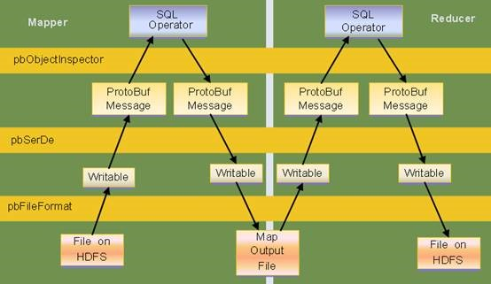
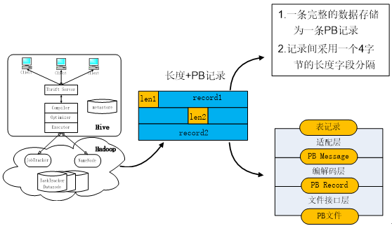

腾讯-006Protobuf在腾讯数据仓库TDW的使用
来源网络整理
简介
protobuf是google提供的一个开源序列化框架，类似于XML、JSON这样的数据表示语言，其最大的特点是基于二进制，因此比传统的XML表示高效短小得多。
虽然是二进制数据格式，但并没有因此变得复杂，开发人员通过按照一定的语法定义结构化的消息格式，然后送给命令行工具，工具将自动生成相关的类，
可以支持java、c++、python等语言环境。
通过将这些类包含在项目中，可以很轻松的调用相关方法来完成业务消息的序列化与反序列化工作。
protobuf在google中是一个比较核心的基础库，作为分布式运算涉及到大量的不同业务消息的传递， 如何高效简洁的表示、操作这些业务消息在google这样的大规模应用中是至关重要的。 而protobuf这样的库正好是在效率、数据大小、易用性之间取得了很好的平衡。
protobuf格式日志在tdw的支持
1、使用protobuf文件创建表
Tdw支持使用用户定义的proto文件来创建表，使用我们开发的编译器扩展对用的proto文件预处理后， 通过proto文件自动抽取出表的结构，支持proto文件引用和message嵌套定义。 例如：
message Person {
required string name = 1;
required int32 id = 2; // Unique ID number for this person.optional
string email = 3;
enum PhoneType {
MOBILE = 0;
HOME = 1;
}
message PhoneNumber {
required string number = 1;
optional PhoneType type = 2 [default = HOME];
}
repeated PhoneNumber phone = 4;
}
创建的表结构为：
table person{
name string
id int
email string
phone array<struct<number:string,type:int>>
}
Protobuf中
- enum 类型转化为tdw的int类型，
- repeated类型转化为tdw的array，
- 支持protobuf中message定义的嵌套，嵌套message类型转化为tdw的struct类型。
2、使用嵌套message protobuf文件的读写适配
提供HDFS与mapreduce层的适配支持protobuf record的input/output format， mapreduce层与hive层的读写适配Serde层支持嵌套类型的message读写和protobuf默认值的支持。

message-protobuf
Protobuf表中的内容采用记录头+记录内容的方式存储，
一条记录的头4个字节存储了该记录的数据长度，文件接口层以该长度为依据去读取相应的记录内容。
各个记录内容之间用一个长度为4字节的长度字段分隔。

protobuf
3、protobuf格式日志在tdw的使用
创建protobuf存储格式的表，创建表过程需要用户手工上传proto文件，生成jar包，最后执行建表语句。 可通过以下几步完成protobuf表的创建：
- 上传Proto定义文件。将proto文件上传到$QE_HOME/protobuf/upload/${UserName}/中
- 准备Jar文件。用makejar脚本预处理proto文件，产生并上传对应表的读写接口jar包。
示例：$QE_HOME/bin/makejar.sh pgurl user passwd dbname tablename username filename protoversion - 创建protobuf格式的表。创建protobuf存储格式的TDW SQL语句是：
CREATE TABLE [partition_def] STORED AS PB。
示例：
创建普通表（不包含分区）create table comp stored as pb 创建带分区的表，假设comp message中包含log_date的字段，以log_date字段建立分区的SQL为： create table comp partition by list(log_date) (partition default) stored as pb
注意事项
- proto文件名一定要是小写，并且不能包含空格等特殊字符;
- proto文件中用到import其他proto文件的，不要写路径，只指明文件名即可， 例如import “text.proto”;
- 主proto文件的message名字一定要与表名相同，根据proto文件生成jar包的时候会进行检查，不相同会报错
- 自定义的类型名和变量名不能相同（支持区分大小写，即message A类型的变量名可以为a），否则生成jar包会失败
- 不能包含空的message，否则建表的时候会出错
protobuf格式的表入库tdw，直接用hadoop命令将pb文件上传到对应表或分区的目录下即可，支持gz压缩。
使用tdw SQL对protobuf表做日志分析，简单字段可以用通用SQL语法处理，
以repeated类型为例描述如何用Lateral View + explode 的SQL处理pb表中的复杂字段。

repeat
举例： 假设广告展示表AdImpression的定义中每个广告展示的记录由一个页面的id和当前页面上展示的广告几个id的list组成，其proto定义为： message AdImpression{ required string pageid = 1; repeated int adid_list =2; }
当前表中有如下数据：
| string pageid | array<int> adid_list |
|---|---|
| “front_page” | [1,2,3] |
| “contact_page” | [3,4] |
对表做lateral view + explode 的SQL如下所示：
select pageid, adid
from pageAds
lateral view explode(adid_list) adTable as adid;
可以产生如下的输出：
| string pageid | int adid |
|---|---|
| “front_page” | 1 |
| “front_page” | 2 |
| “front_page” | 3 |
| “contact_page” | 3 |
| “contact_page” | 4 |
4、Protobuf表在TDW中使用现状
当前TDW中有150张左右protobuf格式的表，
主要存储广点通和推荐业务相关数据，解决了广点通日志模型中存储效率低，分析难度大等问题。
TDW中的pb表大部分为小时或天分区表，日均新增数据30T左右，与文本日志相比节省了大约50%的存储空间。
在达到了简化业务逻辑的同时也达到了节约存储成本的效果。
5、protobuf和TDW数据类型对应关系表
当前protobuf中数据类型对应到TDW内置类型的关系如下：

- 原文作者：liuzhongzhen
- 原文链接：https://liuzhongzhen.github.io/post/%E8%85%BE%E8%AE%AF-006Protobuf%E5%9C%A8%E8%85%BE%E8%AE%AF%E6%95%B0%E6%8D%AE%E4%BB%93%E5%BA%93TDW%E7%9A%84%E4%BD%BF%E7%94%A8/
- 版权声明：本作品采用知识共享署名-非商业性使用-禁止演绎 4.0 国际许可协议进行许可，非商业转载请注明出处（作者，原文链接），商业转载请联系作者获得授权。